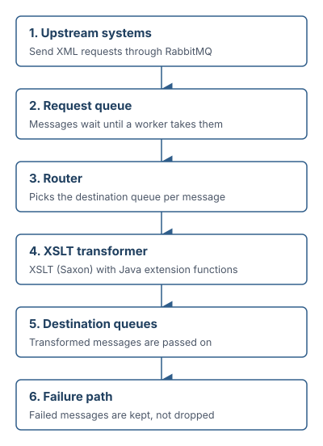

Java & JVM Engineering
Enterprise backend services across Java 6 through 25 with Spring Framework, Spring Boot, JPA/Hibernate, and JVM internals spanning concurrency, class loading, and the Java Memory Model.
Tallinn, Estonia
Senior Software Engineer | Java, Distributed Systems & AI Engineering
Senior Software Engineer specialising in Java backend development, distributed systems, event-driven architecture, enterprise integration, and production infrastructure. Professional experience at Kuehne+Nagel, Oracle, and Taxify (Bolt), complemented by hands-on work in Python, Rust, and AI-powered engineering tools.

Core Capabilities
Backend systems, asynchronous integration, and production reliability built on enterprise Java and polyglot tooling.
Enterprise backend services across Java 6 through 25 with Spring Framework, Spring Boot, JPA/Hibernate, and JVM internals spanning concurrency, class loading, and the Java Memory Model.
Multi-scheduler document lifecycle coordination, stateless AES-GCM access gateways, and idempotent indexing pipelines with deterministic UUIDv5 keys and safe retry semantics.
Asynchronous message routing and bounded worker pools over RabbitMQ and Spring AMQP, plus explicit error-path routing and requeue handling so failed payloads are never silently dropped.
High-reliability XML transformation pipelines using Saxon XSLT, isolated plugin classloaders with runtime reload, and relational persistence on Oracle Database and PostgreSQL.
Production deployments and CI/CD automation with Jenkins, GitLab, Maven, Docker, and Kubernetes, alongside earlier backend delivery across AWS, Azure, and Google App Engine.
JDK defect investigation, test suite stabilisation, and automated testing (JUnit, Mockito, JMockit, EasyMock), plus maintaining distributed test infrastructure across 60+ lab machines at Oracle.
Independent engineering projects combining Rust, Python, Whisper transcription, Qdrant vector search, and Model Context Protocol (MCP) servers for LLM agent integration.
Career Timeline
Chronological engineering record across enterprise Java backend platforms, high-load microservices, and JDK quality infrastructure.
Kuehne+Nagel · Tallinn, Estonia
Core backend engineer developing enterprise Java services, distributed document-processing workflows, asynchronous integration pipelines, and production CI/CD automation for an internal enterprise operations platform.
Taxify (now Bolt) · Tallinn, Estonia · Taxify rebranded as Bolt
Built high-load backend services and REST APIs at Bolt (then operating as Taxify) during rapid platform scaling in Tallinn.
Oracle (Oracle Russia & CIS) · Saint Petersburg
Java Core quality engineering, JDK defect investigation, test suite stabilisation, and distributed test lab automation.
Software Development & Solutions · Saint Petersburg
Led end-to-end delivery on Project "Forward" (marketing information aggregator): requirements gathering, estimation, specifications, design, quality control, release, and support.
Bonus Club "All in plus" · Saint Petersburg
Backend core library, POS update service, loyalty billing software, and Android client development.
OAO INRUSKOM · Saint Petersburg
Database and desktop UI engineering for railway signalling devices.
Engineering Case Studies
Production architecture case studies alongside public repositories spanning Java, Rust, Python, and AI tooling.

Verified public repositories from github.com/stden highlighting Rust, Java concurrency, JPA, quality automation, and MCP/AI tooling.
Rust-first Telegram automation toolkit featuring chat exports, AI auto-responder, LightRAG indexing, ops helpers (HTTP bench, k8s/site monitoring), and legacy Python MCP/analysis modules.
High-performance dual-panel terminal file manager (ffm) built in Rust with ratatui, inspired by Far Manager and Norton Commander, backed by BDD tests.
Fast desktop engineering utility for instant screenshot capture and H.264 MP4 screen recording.
Automated quality-gate checker querying SonarCloud / SonarQube metrics for bugs, code smells, and quality gate status.
Reusable Java concurrency utility providing fine-grained synchronization similar to row-level database locking keyed by entity IDs.
Spring Framework 6, Hibernate 6, and Jakarta Persistence 3.2 experiments and integration tests built with Maven and H2.
Systems Design
Interactive component flows illustrating asynchronous messaging, stateless security tokens, distributed lifecycle coordination, and semantic search with MCP.
Asynchronous AMQP message routing with bounded concurrency, isolated plugin classloaders, zero-restart context reloads, and non-destructive failure recovery.
Selected Component
Publishes integration payloads as AMQP messages without coupling to downstream schemas.
Engineering Concepts
Message delivery guarantees
Design Trade-off
Async decoupling absorbs burst traffic at the cost of eventual end-to-end delivery.
Inspect Components (Click or Enter)
AES-GCM encrypted time-limited links enabling stateless file streaming decoupled from remote document fetching and lifecycle cleanup.
Selected Component
Requests a shareable, time-limited download token for an existing remote document.
Engineering Concepts
Security
Design Trade-off
Separating link minting from file serving keeps business apps unaware of storage mechanics.
Inspect Components (Click or Enter)
Coordinating asynchronous retrieval, state transitions, and TTL cleanup across independent scheduled loops without distributed locks on the request path.
Selected Component
Acts as the single source of truth for document availability, retry eligibility, and expiration windows.
Engineering Concepts
Distributed coordination · Eventual consistency
Design Trade-off
Explicit state enums simplify reasoning about concurrent jobs compared to implicit filesystem timestamps.
Inspect Components (Click or Enter)
Cross-language personal ingestion pipeline bridging PostgreSQL and Qdrant with idempotent UUIDv5 upserts and MCP tool exposure.
Selected Component
Provides incremental message history and voice attachments subject to upstream rate limits.
Engineering Concepts
Failure handling
Design Trade-off
Rate-limited upstream API requires persistent cursor checkpoints to avoid costly full re-syncs.
Inspect Components (Click or Enter)
Deterministic UUIDv5 vector point IDs and safe job-claim retries ensure replaying a failed batch updates existing state rather than duplicating records.
Checkpoints advance only after downstream upserts succeed, and scheduled housekeeping converges database lifecycle states with local file caches.
Bounded AMQP worker pools and explicit requeue paths preserve at-least-once processing guarantees across asynchronous integration stages.
Dedicated error pipelines emit diagnostic notifications and requeue failed messages, while sync workers apply flood-wait backoff and bounded retries.
PostgreSQL lifecycle tables, SKIP LOCKED job claiming, and independent 15 s / 60 s schedulers coordinate concurrent work without request-path locks.
Atomic move-after-download prevents partial reads, while housekeeping and cleanup jobs keep local files aligned with link expiration.
Structured failure alerts, explicit lifecycle state enums, and automated SonarQube quality-gate checks keep failures visible and diagnosable.
AES-GCM authenticated encryption protects time-limited document tokens, while isolated plugin classloaders and read-only MCP boundaries limit blast radius.
Technical Matrix
Categorised by engineering domain and backed by role or repository evidence—distinguishing core production skills from additional and personal project technologies.
Primary enterprise backend engineering stack across production roles.
Event streaming, AMQP brokering, relational databases, caching, and vector storage.
Build pipelines, container orchestration, runtime administration, and monitoring.
Production polyglot backend/frontend delivery alongside personal systems programming.
Personal projects and AI-assisted software delivery workflows.
Automated verification, mocking frameworks, BDD/E2E testing, and CI gates.
Academic Background
Saint-Petersburg Electrotechnical University "LETI"
1999 – 2005
Recruiter & Hiring Contact
Based in Tallinn, Estonia. Direct contact channels and role-specific ATS-friendly PDF resumes generated from a single verified profile.
Senior backend and distributed systems engineering roles
International Java / Spring Boot backend engineering teams
Distributed backend, event-driven architecture & reliability engineering teams
International fintech & high-reliability integration engineering teams
Tailored for Wise Senior Java / Distributed Backend engineering teams
AI platform, semantic search & Model Context Protocol engineering teams
Comprehensive career history, full project case studies & open-source record